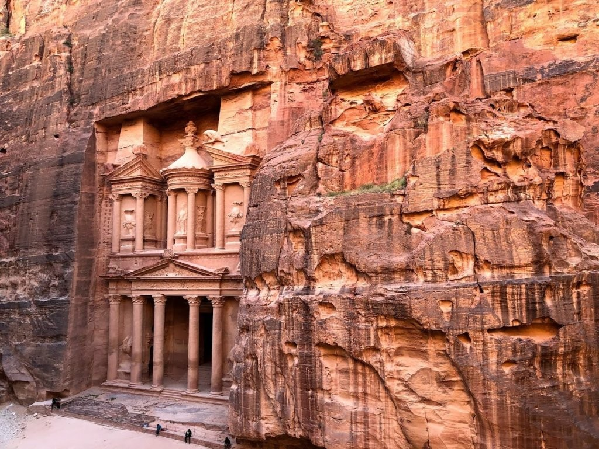
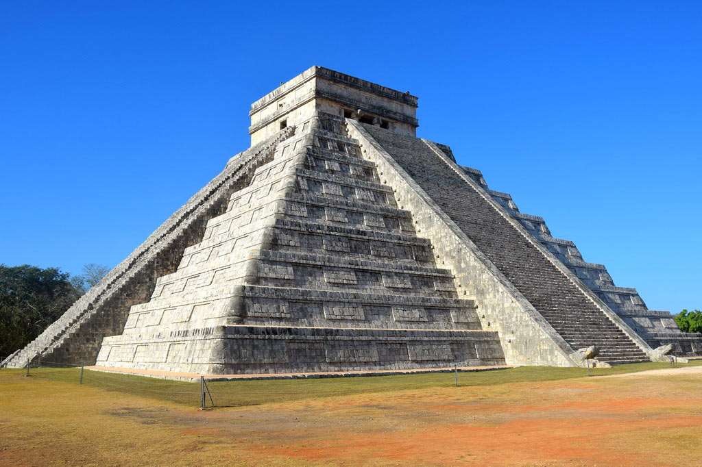

Эль-Хазне
Древний город Петра был построен более 2000 лет назад. Он высечен в камне нежного розоватого оттенка, и поэтому его называют «Розовым городом». Новое чудо света позволяет прикоснуться к тайнам давно исчезнувшей цивилизации.
Когда-то более 30 000 человек населяли здания Петры, вырезанные прямо в скалах посреди пустыни. Даже те, кто никогда не видел сокровищницу Эль-Хазне, легко узнают ее монументальный фасад. Он очень часто появляется в ленте Instagram. А после выхода фильма «Индиана Джонс и последний крестовый поход», который снимали здесь, храм стал всемирно известной достопримечательностью.

Чичен-Ица
Завершает список современных чудес света наследие майя — еще одной утраченной цивилизации Америки. Священный город Чичен-Ица на севере полуострова Юкатан основан примерно в VII веке нашей эры, позднее свой вклад в архитектуру комплекса внесли захватившие его тольтеки. Точно неизвестно, почему столь развитый город опустел в конце XII века. В комплекс сохранившихся памятников Чичен-Ица входят храмы-пирамиды, игровые «стадионы», руины колоннад, колодец жертвоприношений и обсерватория.
-tmb-1200x628xfill.jpg)